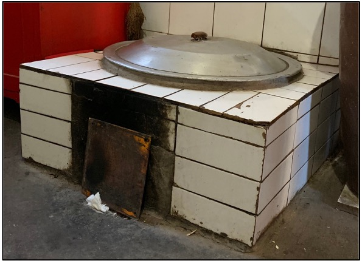
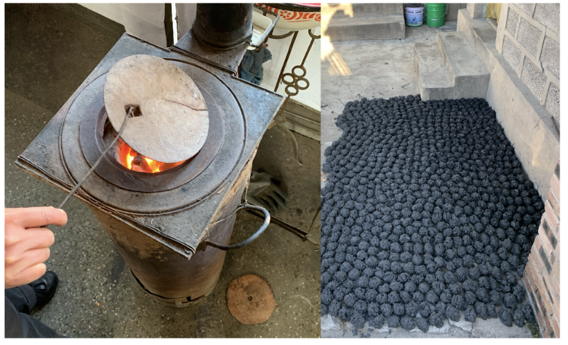
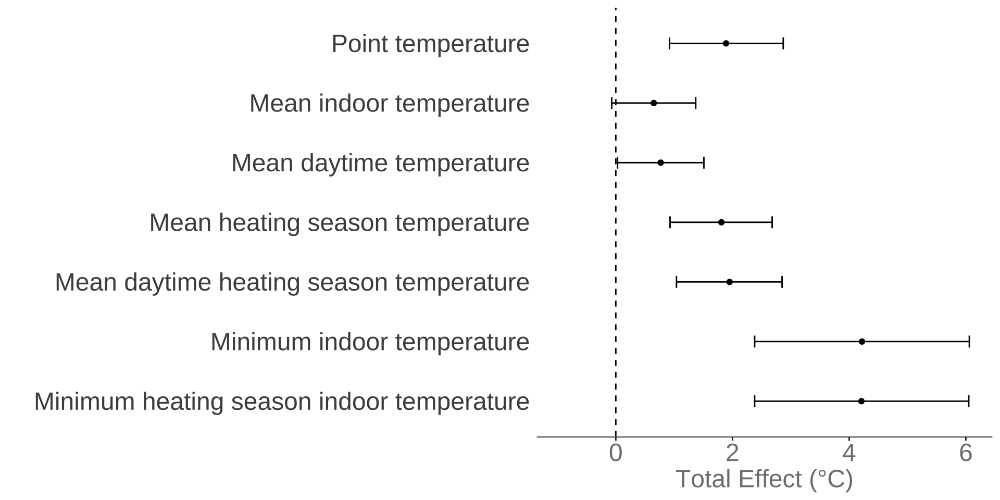

Impacts of transitioning to clean household energy
Evidence from policy reform in peri-urban Beijing
Sam Harper
2025-02-24
Beijing Household Transitions Project
Impact of transitioning to clean heating in rural China on:
Community and personal air pollution exposure;
Indoor temperatures in homes;
Blood pressure, respiratory symptoms, markers of inflammation and oxidative stress
Energy use patterns
Wellbeing and income
Interdisciplinary Team
McGill University
- Sam Harper (Epidemiology)
- Jill Baumgartner (Epidemiology)
- Brian Robinson (Geography)
- Chris Barrington-Leigh (Economics)
- Koren Mann (Toxicology)
- Arijit Nandi (Epidemiology)
- Robert Platt (Biostatistics)
Colorado State University
- Ellison Carter (Engineering)
- Xiaoying Li (Engineering)
Chinese Academy of Sciences
- Yuanxun Zhang (Air Chemistry)
- Zhongjie Fan (Cardiology)
Peking University
- Shu Tao (Environmental Science)
- Yaojie Li (project coordinator)
China National Center for Cardiovascular Disease
- Liancheng Zhao (CVD epidemiology)
Knowledge Users
- Barry Jessiman (Health Canada)
- Alison Dickson (Environ & Climate Change Canada)
- Iris Jin, Asia Pacific Foundation of Canada
- Richard Fuller, Pure Earth Foundation
Funders
- Canadian Institutes of Health Research
- Health Effects Institute (USA)
Background
The role of coal in China
Global exposure to suspended particles <2.5 microns in diameter (PM2.5)
Residential coal burning in China
- Residential coal burning makes a substantial contribution to emissions
- Particularly in winter months
Residential cooking vs. heating
Residential coal burning in China
Coal contains fluorine, arsenic, lead, selenium and mercury, which are not destroyed by combustion;
Technical constraints make it difficult to burn coal cleanly in households;

Policy Context
Beijing designated “coal restricted areas” in 2016
Government subsidized electric or gas-powered heat pumps (80% of $4,500 cost)
2017: required up to 2 million people to halt coal use
Stepped implementation from 2017-2021 in Beijing and northern China (63 million homes)
“Coal to Clean Energy Program”
- Village-level intervention.
- Subsidized purchase of heat pump; electricity subsidized regionally.
- Remove coal stoves; reduce supply.
- Retrofit existing homes or build new homes in the village.

Lower temperatures, higher blood pressure
Higher PM2.5, higher blood pressure
Research Gaps (1)
Focused on ambient PM2.5 or economic growth
No credible identification strategy
Often model-based simulation of health impacts
No direct measurements of health or personal exposure
Research Gaps (2)
Most prior work only on cookstoves
Several RCTs
Mixed evidence on air pollution
Challenges with uptake
Multiple sources (e.g., stove-stacking)
Weak evidence on health impacts, even when household PM reduced
Household energy solutions need to go beyond cooking interventions alone; there are multiple sources that contribute to household air pollution
Research Gaps (3)
Limited evidence on how heating interventions might affect health
Through reduced air pollution?
Raising indoor temperature?
Transitioning may increase expenses, change behaviors
We find, even when all available 2018–2020 subsidies are applied, rural households in northern China…are still facing unaffordable clean heating costs.
Overall Study Objectives
Aim 1.
Estimate the total effect of the intervention.
Aim 2.
Estimate the contribution of changes in the chemical composition of \(PM_{2.5}\) to the overall effect on health outcomes.
Aim 3.
Examine alternative pathways and mechanisms that may contribute to the intervention’s impact.
Methods: Data
Village ‘enrollment’
- ‘National’ policy devolved to local governments
- Village leaders announce and explain the program at commission meetings
We:
- Focus on eligible for the policy but not currently treated
- Semi-structured interviews with village committee reps
- Generally unaware of if or when they would be treated
“(We are) get used to be asked when to change to electricity. There is a little pressure before when everyone was asking, but this is not the thing that a village can decide. There are district level, township level approval processes to complete.”
Village sampling
Identified 50 villages not yet exposed to policy
Randomly selected ~20 homes in each village
Enrolled 1 individual per home
Data Collection Overview
Measurements
Village
- Outdoor air pollution (1-2 months per season)
- Information on village policies/programs
Household
- Questionnaire on energy patterns and related expenditures
- Indoor air temperature (~75% of homes for 2+ winter months)
- Electricity use based on meters
Individual
- Questionnaires on health status, behaviors, conditions, and medication use
- Exposures to PM2.5 and black carbon (50% of participants)
- Health measurements (BP, self-reported respiratory symptoms, blood inflammatory and oxidative stress markers (~75%), grip strength (~75%), airway inflammation via exhaled NO (~25%)
Blood pressure measurement
- Automated oscillometric device.
- Calibrated by manufacturer before Years 1 and 4.
- Home BP measurement by trained staff.
- Measured blood pressure 3 to 5 times on participants supported right arm, after 5 mins of quiet, seated rest.
- Mean of final 2 measurements used in analysis.
Indoor temperature
- Measured indoor temperature in the 5-min before BP.
- Long-term measurement in a subsample of households with sensor taped to household wall.
- Thermochron iButton or LabJack Digit-THL sensors.
- Interior wall of most commonly used room.
- 1.5m height (~ participant height).
- Measured 5-12 months
- 125-min sampling interval.
Indoor air pollution (PM2.5)
1. Long-term measurement with real-time sensors.
- 6 households per village.
- Run with standard measurements (BAM/TOEM) pre- and post-data collection, each year.
- Measured 5-mo., 1-min sampling interval
2. 24h measurement with filter-based instrument.
- 3 households per village.
- Accepted (gold-standard) measurement.
- Used to calibrate real-time measurements.

Methods: Statistical Approach
Basic idea for mediation
To understand the pathways, mechanisms, and intermediates through which a treatment affects an outcome.
How much of the policy effect is through:
- Policy impacts on PM2.5, indoor temperature
- Other pathways (e.g., behavioral changes)
- Allow for multiple mediators
First part of mediation: total effect
Step 1: Estimate the total effect of policy (\(T\)) on BP.
Second part of mediation: decomposition
Basic idea: understand pathways of effects
Step 2: Estimate how much of the total effect is due to PM2.5, temperature vs. other pathways?
Second part of mediation: decomposition
Basic idea: understand pathways of effects
Step 2: Estimate how much of the total effect is due to PM2.5, temperature vs. other pathways?
Second part of mediation: decomposition
Basic idea: understand pathways of effects
Step 2: Estimate how much of the total effect is due to PM2.5, temperature vs. other pathways?
Quantities of interest
Total effect: \[{E[Y|T,X]=\beta_{0}+\beta_{1}T +\beta_{2}X}\]
The estimated total effect,
where \(T^{*}\) is exposure to ban and \(T\) is no exposure: \[\color{blue}{TE=\beta_{1}(T^{*}-T)}\]
Mediation model
Estimate two regressions:
- Treatment on mediator:
\[\color{red}{E[M|T,X]=\beta_{0}+\beta_{1}T +\beta_{2}X}\]
- Treatment and mediator on outcome:
\[E[Y|T,X,M] = \theta_{0} + \theta_{1}T + \theta_{2}M + \theta_{3}TM + \theta_{4}X + \theta_{5}W\]
Second equation estimates the “Controlled Direct Effect”: \[\color{violet}{CDE=\theta_{1}+\theta_{3}TM}\]
What the hell is the CDE?
Interpretation
This effect is the contrast between the counterfactual outcome if the individual were exposed at \(T=t\) and the counterfactual outcome if the same individual were exposed at \(T=t*\), with the mediator set to a fixed level \(M=m\).
English:
“How much would blood pressure change if the policy were implemented and we held \(PM_{2.5}\) fixed at \(m\) ?“
Key assumptions
Assumptions for valid CDE:
- No confounding of the total effect.
- No confounding of the mediator-outcome effect.
Basic Design: Difference-in-Differences
Challenges:
Group differences
Time trends
Time-varying confounders
Staggered implementation
Key assumptions:
No anticipation
Parallel trends
Challenges with staggered adoption
Using earlier treated groups as controls only ‘works’ under homogeneity.
Early treatment effects get subtracted from the DD estimate.
Generates poor summary estimate if there is heterogeneity.

Statistical model
Total effect via “extended” two-way fixed effects: \[Y_{ijt}= \alpha + \sum_{r=q}^{T} \beta_{r} d_{r} + \sum_{s=r}^{T} \gamma_{s} fs_{t}+ \sum_{r=q}^{T} \sum_{s=r}^{T} \tau_{rs} (d_{r} \times fs_{t}) + \mathbf{Z}_{ijt} + \varepsilon_{ijt}\] \(X\) includes:
- \(d_{r}\) = treatment cohort fixed effects
- \(fs_{t}\) = time fixed effects
- \(\mathbf{Z}_{ijt}\) = time-varying covariates (age, sex, wealth index, waist circumference, smoking, alcohol consumption, BP medication)
TE is average of marginal ATTs \(\color{blue}\tau_{rs}\), averaged over cohort and time.
Mediation model
CDE estimated by adding \(M_{it}\) mediators
plus time-varying covariates \(\mathbf{W}_{ijt}\) \[Y_{ijt} = \alpha + \sum_{r=q}^{T} \beta_{r} d_{r} + \sum_{s=r}^{T} \gamma_{s} fs_{t}+ \sum_{r=q}^{T} \sum_{s=r}^{T} \tau_{rs} (d_{r} \times fs_{t}) \\ + \mathbf{Z}_{ijt} \] \[ + \delta M_{ijt} + \sum_{r=q}^{T} \sum_{s=r}^{T} \eta_{rs} (d_{r} \times fs_{t} \times M_{ijt}) + \zeta \mathbf{W}_{ijt} + \varepsilon_{ijt}\]
CDE is average of ATTs \(\color{blue}\tau_{rs}\), holding \(M\) constant.
Results
Treatment groups were generally balanced
Never treated (N=603)
|
Ever treated (N=400)
|
|||||
|---|---|---|---|---|---|---|
| Mean | SD | Mean | SD | Diff | SE | |
| Age (years) | 59.9 | 9.4 | 60.4 | 9.2 | 0.5 | 0.6 |
| Female (%) | 59.5 | 49.1 | 60.0 | 49.1 | 0.5 | 3.2 |
| Secondary+ education (%) | 12.6 | 33.2 | 9.8 | 29.7 | -2.9 | 2.0 |
| Wealth index (bottom 25%) | 26.9 | 44.4 | 22.3 | 41.7 | -4.6 | 2.8 |
| Current smoker (%) | 26.2 | 44.0 | 25.4 | 43.6 | -0.8 | 2.8 |
| Daily drinker (%) | 17.8 | 38.3 | 21.9 | 41.4 | 4.1 | 2.6 |
| Systolic (mmHg) | 131.4 | 16.8 | 128.7 | 14.3 | -2.7 | 1.0 |
| Diastolic (mmHg) | 82.7 | 11.6 | 82.1 | 11.3 | -0.6 | 0.8 |
| Body mass index (kg/m2) | 26.3 | 3.7 | 25.8 | 3.6 | -0.5 | 0.3 |
| Any respiratory problem (%) | 50.6 | 50.0 | 54.3 | 49.9 | 3.7 | 3.2 |
| Temperature (°C) | 13.8 | 3.6 | 13.5 | 3.3 | -0.3 | 0.2 |
| Personal PM2.5 (ug/m3) | 127.1 | 145.3 | 102.3 | 105.5 | -24.7 | 11.9 |
Uptake: Treated units reported using less coal
Also declining in never treated
Larger increase in any/exclusive electricty use
Again, also increasing in never treated
Did the policy affect outcomes?
No evidence of non-parallel pretrends for later-treated cohorts
Impact on blood pressure
Potential impact of compositional changes
Restricted to same particpants across all 3 waves of data collection
Limited evidence for subgroup differences
Some evidence of cohort heterogeneity
Did the policy affect the mediators?
Policy reduced (only) indoor PM2.5
Policy increased indoor temperature

Do PM2.5 and temperature mediate the BP effect?
BP mostly mediated by PM2.5 and temp
Conclusions
Uptake
- High uptake and consistent use of the new heat pump technology.
- Persistent effects for early treated villages.
- Large reductions in coal use in treated villages.
Impacts
Air pollution
- Impacts on indoor PM2.5 but not personal exposures or outdoor PM2.5
- Secular trends affected by large-scale policy changes
- Movement between indoor and outdoor
Health outcomes
- Overall lower BP, moderate effects
- Some evidence of cohort heterogeneity
- BP impacts largely mediated by PM2.5 and temperature
Limitations and Extensions
No pre-trends for earliest treated group.
Can’t rule out other time-varying confounders.
Strong assumptions required for mediated effects.
Sustainability: heat pumps remain 5–18 times higher than gas (clean coal) heaters at present, making them unaffordable for many households.
More work on income and well-being impacts.
Questions?
sam.harper@mcgill.ca
samharper.org
References
Lewington, S., LiMing, L., Sherliker, P., Yu, G., Millwood, I., Zheng, B., Whitlock, G., Ling, Y., Collins, R., Junshi, C., others, 2012. Journal of hypertension 30, 1383.
Tao, S., Ru, M., Du, W., Zhu, X., Zhong, Q., Li, B., Shen, G., Pan, X., Meng, W., Chen, Y., others, 2018. Nature Energy 3, 567.
VanderWeele, T.J., 2015. Explanation in causal inference: Methods for mediation and interaction. Oxford University Press, New York.
Wooldridge, J.M., 2021. Two-Way Fixed Effects, the Two-Way Mundlak Regression, and Difference-in-Differences Estimators [WWW Document]. URL https://papers.ssrn.com/abstract=3906345 (accessed 2.10.2023).